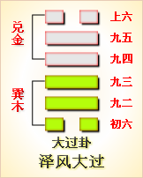

高岛易断 - 34雷天大壮
高岛易断 34 雷天大壮
《序卦传》曰：“物不可以终通，故受之以大壮。”《遁》者，阳之退，《大壮》者，阳之进，无往不复，《大壮》所以继《遁》也。卦体《乾》下《震》上，《乾》刚在下，加以《震》阳在上，乘健而动，动而愈刚，壮往之势，进而不止，既壮又大，是四阳之过也，故卦曰《大壮》。
大壮：利贞。
阳为大，阳长至四，坚实而壮，故曰《大壮》。三阳为《泰》，至四而称壮，壮而曰大，壮之过也。《乾》曰"元亨利贞"，《震》曰"亨"，《大壮》不曰元亨，独曰"利贞"，而六爻又多戒辞，恐其失正而动，动必得咎，是知《大壮》非《易》之所贵也。
《彖传》曰：大壮，大者壮也。刚以动，故壮。大壮利贞，大者正也。正大而天地之情可见矣。
此卦下《乾》上《震》，《震》者雷也，《乾》者天也。《乾》在下为刚，《震》在上为动，刚而动，动得其刚，则刚而愈动，壮盛之势，莫之能遏，此壮之所以曰大也。夫大莫大于天地，天地之动得其正，则四时行焉，百物生焉，其大也，即其正也，故《大壮》必曰"利贞"。贞者，正也，"大壮利贞，大者正也"，大而正，则其壮也配义与道，可充塞于天地之间，而天地之情，即于此可见矣。
以此卦拟人事，为其人生性本刚，而复逞其发动之气，乘刚而动，勇往直前，非不足以有为也，然过刚则折，过勇则蹶，败事之咎，即在此《大壮》中也。《杂卦传》曰"大壮则止"，其以此也。《大壮》首曰"利贞"，利贞者，利于贞，贞即谓正，所谓"大者正也"。卦体《震》上《乾》下，《乾》本健行，至上九阳极则亢，是以有悔。《震》主《震》动，而爻象皆言恐惧，可知《易》道恶其过刚。越礼违谦，往必不利，故君子戒之以"弗履"，惕之曰"用罔"。故以柔济刚，以静定动，则动如无动，而刚若不刚，则见壮即见正也。孟子所谓至大至刚之气，其在斯乎？
以此卦拟国家，为国运壮盛之时也。上卦曰《遁》，四阳在上，二阴浸长，此卦反之，四阳在下，二阴浸消。阳长阴消，乘刚而动，故曰"大壮，大者壮也"。是君子日进，小人日退，国运全盛，正在此时。然国运过盛则侈，卦象过壮则暴，侈与暴，皆失其正，故《大壮》必曰"利贞"。贞之为言正也，非正无以成其大也。大而正，斯刚不过刚，动无过动，是以正而用壮，"大者壮"，即"大者正"也。《象》所云"君子非礼弗履"，礼即正，非礼即非正，君子亦用其正而已。夫子所谓"政者正也，正则行，不正则不从"，垂诫深矣。故六爻多戒"用壮"：初惩以"凶"，三戒以"厉"，五教以"易"，上惕以"艰"，惟二四两爻，得其"贞吉"。盖易道恶其太过，以得中为吉，治道亦然，此王者所以贵持盈而保泰也。
通观此卦，卦体《乾》下《震》上，卦象内刚外动，乘此阳之正壮，以逼阴之将消。疑若易易，然阴方得位，未可遽逼，刚不可恃，进不可躁，故君子必以礼为履也。《大壮》反卦为《遁》，《遁》，退也，二阴方进，其退不可不决；《大壮》，进也，：二阴未退，其进不可太猛。《杂卦传》曰，"大壮则止，遁则退也"，其卦义相反如此，而爻象亦皆先后互反。阴进则阳退，阴退则阳进，此《大壮》所以继《遁》也。六爻分属二卦，内三《乾》体，外三《震》体，以二五为得中。初爻为《乾》之始，一往直前，知进而不知退，故"凶"。二爻为《乾》之主，喜得其中，而犹不失其正，故"吉"。三爻居《乾》之终，"小人"指初，"君子"指二，"罔"谓法网，即君子怀刑之意，盖合初与二，分言以明之也。四出《乾》入《震》，为壮之主，以阳处阴，动不违谦，故得吉而"悔亡"。五爻居《震》之中，能于平易之时，柔而得中，不用其壮，故"无悔"。上居《震》之极，进退维谷，何利之有？唯能凛之以艰则吉。总之，持盈保泰，壮乃得吉，越礼违谦，壮必有悔，是必如三之"用罔"，而不"用壮"，斯为处壮之要道也，玩《易》者其审之！
余读《大壮》一卦，而有慨夫维新先后之义士也。当幕政初衰，妄施议论，不知忌讳，即所谓初之壮趾凶也。著书立说，有主尊攘，以兴起天下之大义者，如二之得中"贞吉"也。方其列藩应义，群才奋兴，或躁或缓，邪正不一，祸福攸分，如三所谓"用壮""用罔"之不同是也。或有慎礼守谦，不失其壮，能以尚往得吉者，如四之"藩决不羸"是也。或有居易预防，不涉险难，以退为进而"无悔"者，如五之"丧羊于易"是也。至若方今当路大臣，皆出自昔年创义藩士，历尽艰危，而得际其盛者，如上六之"艰则吉"者是也。要之废藩诸士，忠肝义胆，国而忘身，均可嘉尚，其间成败祸福，亦各自取。"用罔"，实足为前事之鉴也夫！
《大象》曰：雷在天上，大壮，君子以非礼弗履。
大象《震》雷，发于《乾》天，势力强壮，故名曰《大壮》。夫《随》、《复》、《豫》、《大壮》四卦，皆得《震》体，故皆取象于雷。《随》雷入泽中，阳势渐收，是谓秋雷；《复》雷入地中，阳势已微，是谓冬雷；《豫》"雷出地奋"，阳势方盛，是谓春雷；《大壮》曰"雷在天上"，阳势健盛，是谓当令之夏雷也。君子则之，谓雷之发声，必以其时，不时则为灾；君子之践履，必由于礼，非礼则有悔。《乾》为行，《震》为足，有《履》之象。《乾》之《象》曰，"君子以自强不息"，《震》之《象》曰，"君子以恐惧修省"，合而言之，君子因欲自强，惟以非礼而履者，为可惧耳，即夫子所谓"非礼勿视，非礼勿听，非礼勿言，非礼勿动"之旨也。
【占】 问战征：军势强盛，有疾雷不及掩耳之势；但兵骄必败，所当深戒。
○ 问营商：雷在天上，是货价高标之象，得价而售，不可过。
○ 问功名：雷声远震，必得成名。
○ 问家宅：防有火灾，宜祷。
○ 问疾病：《震》为雷，亦为足，防有足疾，不能行也。
○ 问婚姻：《震》为《乾》之长子，《巽》为《坤》之长女，是天合也，吉。
○ 问失物：雷一过而无形，恐此物不能复得。
○ 问六甲：生男。
高岛易断 初九：壮于趾，征凶，有孚。
《象传》曰：壮于趾，其孚穷也。
初居《大壮》之始，在下卦之下，在下而动，故曰"壮于趾"；《震》为征，故曰"征"；迈征而往，有急起直追之势，无"视履考祥"之念，是以凶也，故曰"征凶。""有孚"，《象传》曰"其孚穷也"，谓初虽与四应，初既穷其所往，四又隔远，无能为力也，故曰"其孚穷也"。
【占】 问战征："壮于趾，征凶"，为孤军深入者戒也，有勇无谋，是以凶也。
○ 问营商：货财贩运，有不胫而走、不翼而飞之妙；然不度销路，而贸然而往，何能获利？故凶。
○ 问功名：初本在下，曰"趾"，则动亦在下，功名必卑。
○ 问家宅："趾"，止也，此宅宜安止，不宜迁动，动则有凶。
○ 问婚姻：防女有足疾。"征凶，有孚"，谓虽有聘约，"其孚穷也"。
○ 问失物：此物已被足所践踏而坏。
○ 问六甲：生男。
【例】 友人某来，请占事业之成否，筮得《大壮》之《恒》。
断曰：初爻居《乾》之始，在内卦之下，是必发事谋始，机会未至，而足先欲动者，故有壮趾之象。足下占事业，而得《大壮》初爻，知足下志在速成，当谋划未详，经验未定，而贸然前进，不特无利，且有凶也，故曰"壮于趾，征凶，有孚"。"壮于趾，征凶"者，谓轻举而取失败；"有孚"者，谓徒有此约信也。此事须待时而动，缓图则吉，今乃仓猝求成，是以凶也。
友人不用此占，急遽兴业，遂致失策而倾家；后有人以资金三分之一，继承其业，反得大利。
高岛易断 九二：贞吉。
《象传》曰：九二贞吉，以中也。
全卦诸爻，皆失于过刚，惟二爻为得中，中者不偏之谓也。二与五应，无抵触之失，是以无过不及，而进退适宜，故不言"壮"，不言"正"，直曰"贞吉"，盖即以《彖》之"利贞"归之，而著其吉也。《易》道虽贵扶阳抑阴，然阳刚过盛，亦失其中，故必抑其过刚，以就其中，中则正，正则吉也。《象传》曰"以中也"，以九二当下卦之中，刚而能柔，所处得中也。
【占】 问战征：以中营得力，故能获胜，吉。
○ 问营商：以货价适宜，得其时中，可获利也。
○ 问功名：恰好中式，吉。
○ 问婚姻：雀屏中选，吉。
○ 问家宅：此宅坐西朝东，地位适中，大吉。
○ 问疾病：病在中焦，宜用潜阳滋阴之剂，自得痊愈。吉。
○ 问讼事：得中人调剂，即息。
○ 问六甲：生男。
○ 问行人：已在中途，即可归也。
【例】 某会社社长，来请占气运，筮得《大壮》之《丰》。
断曰：此卦四阳在下，二阴在上，阳大阴小，刚浸而长，故曰《大壮》。足下占会社而得二爻，可见社中资金充裕，足以有为。足下身任社长，所当以柔济刚，以静制动，从容办事，不期速效，谦和有礼，进退悉中，自能徐徐获益，吉无不利也。后二年，至四爻，四为《大壮》之主，可得大利。后果如所占。
高岛易断 九三：小人用壮，君子用罔，贞厉。羝羊触藩，羸其角。
［4］
［5］
［6］
［7］
《象传》曰：小人用壮，君子罔也。
"羝羊"，牡羊也。三至五体《兑》，为羊，故取象于羊；卦体纯刚，故曰"羝羊"，以喻刚阳之盛也。三当内卦之终，逼近外卦，《乾》刚《震》动，壮象将成。小人处此，必将恃其壮而壮焉，是谓"用壮"；君子有其壮，而不敢自居其壮，一若未尝有壮也，故曰"用罔"。"罔"，无也，京房
［8］
曰，"壮一也，小人用之"，君子有而不用是也。三以阳处阳，重刚不中，虽贞亦危，故曰"贞厉"。君子因其厉而益加强焉，朝乾夕惕，时以非礼自防，不敢或逞其壮，所谓以有若无也。九四体《震》，为竹苇，故曰"藩"；藩所以闲羊，四在前，三触之，故曰"羝羊触藩"，象小人之用壮也。"羸"，郑虞作累，为拘累缠绕；"羸其角"，角，羊角，谓羊触藩，其角为藩所拘累，而不能出也，以喻用壮之危。"小人用壮"，当知所返矣；"君子用罔"，斯可免危矣。《象》曰"小人用壮"，小人第知有壮；"君子罔也"，去一"用"字，益见君子之不用，所贵敛之以无也。一说：罔，法网也，君子知壮之为厉，凛凛然以刑网为戒，即君子怀刑之意。亦通。
【占】 问战征：善战者审机察敌，不敢妄动；恃勇者逞强战斗，孤军直入，致陷险地而不能出，是以凶也。
○ 问营商：自恃资财之富，任意垄断，一至货物毁折，无地销售，必遭大损。善贾者当无是虑。
○ 问功名：鲁莽者必败，谦退者成名。
○ 问家宅：此宅地位既高，建屋宜低，屋高恐有震陷之灾。
○ 问疾病：病由血气过刚，药宜调血下气。
○ 问讼事：以忍气受屈，息讼为宜，若健讼不休，讼则"终凶"。
○ 问婚姻：两姓或一贫一富，若富者恃富凌贫，以致夫妻反目，凶。
○ 问六甲：生男。
【例】 友人某来，请占商业盛衰，筮得《大壮》之《归妹》。
断曰：此卦内卦《乾》父，外卦《震》子，是父主谋于内，子干事于外，父子协力，以创兴家业，财力旺壮，故曰《大壮》。足下占商业，而得三爻，以阳居阳，爻位皆刚，若径情直往，其壮强之势，几可压倒同业，然过刚必折，恐反为同业所轧，必遭窘辱，如羊之触藩而不能出也。善贾者坚贞自处，不敢挟富而生骄，亦不敢恃才而自侈，虽有其壮，而不用其壮，斯得处壮之方，即得生财之道也。足下其熟审之！后友人乘壮用事，果为同业所挤，损失数万金。
【例】 明治二十七年五月中旬，我国驻英国公使某罹病，友人某忧之，请余一占。筮得《大壮》之《归妹》。
断曰：此卦阳长之卦，三爻又以阳居阳，《震》为木，木属肝，是必肝阳过盛，脾阴受克之症。某公使素体壮健，医者因其壮而误为实火，一味泻肝息阳，而元气愈虚，肝阳愈燥，病至不可药救，是谓用壮之误也。善医者当以育阴潜阳治之，所谓"用罔也"。至论爻象，三爻变为《归妹》，归者，归也，至四爻变《泰》，则病可疗。今当五月中旬，必过此一月后，可望平愈，然恐不及也。
后某氏之病，果以翌月四日遂亡。
高岛易断 九四：贞吉，悔亡。藩决不赢，壮于大舆之輹。
［9］
《象传》曰：藩决不赢，尚往也。
九四出《乾》入《震》，为《震》之始，以阳居阴，不极其刚，故得吉而悔亡也。三之有藩，藩在四也，四前二阴，则藩决矣。"輹"，车轴缚也，《坤》为大舆，《震》上二阴得《坤》气，故亦曰"大舆"。輹壮则舆强，言行远而无碍也。率此以往，壮而不见其壮，悔何有焉？《象传》曰"藩决不羸，尚往也"，谓壮得其贞，乃可许其前往也。
【占】 问战征：前途城垣已破，车驰马逐，长征可无阻也。
○ 问功名：九四互《乾》，辰在戌，上值奎壁，壁主文昌，所以崇文德也，功名必显。王良五星在壁北，主车马，大舆之象；雷电六星亦相近，主兴雷，即《震》雷之象。
○ 问营商：可许满载而归，吉。
○ 问家宅：此宅当车马往来之地，宅前藩篱破落，急宜修整。
○ 问疾病：人以发肤为藩卫，以心神为舆马，发肤破裂，心神摇荡，病不久矣。
○ 问婚姻："车脱輹，夫妻反目"，非佳偶也。不吉。
○ 问六甲：九四为《震》之始，《震》一索得男，为长子也。
【例】 明治二十七年九月，大本营之进广岛也，大元帅陛下，将发亲征。恭筮一卦，得《大壮》之《泰》。
断曰：此卦四阳连进，上决二阴，其势盛大，故曰《大壮》。今我兴征清之师，彼严兵固壁，尚不能当，况其藩卫已决，何能御我乎！恍如骋大车于坦途，可预决也。爻象如此，其吉可知，因呈此断于某贵显。
高岛易断 六五：丧羊于易，无悔。
《象传》曰：丧羊于易，位不当也。
上卦互《兑》，《兑》为羊，五正是羊。"丧"，亡也；"易"音亦，陆作场，谓疆场也，易场古通字。《乾》为郊，郊外谓之牧，五当《乾》郊外疆场之地，畜牧之所也。畜牧有藩，防其逸也。卦以《震》之下画为藩，三触之，四则藩决矣，五则羊逸，羊逸于易，所谓"大道多岐而亡羊"，故曰"丧羊于易"。五居《震》卦之中，偶画为阴，易，为旷郊阴地，阴爻而入阴地，不见其壮，故象为"丧羊"。且羊性刚卤，喜触，无羊则无触，无触则无用壮之悔，故曰"无悔"。《旅》上九曰"丧牛于易"，"易"亦作场。《旅》宜柔，丧其柔，是以"有凶"也；《大壮》恶刚，丧其刚，是以"无悔"也。《象传》曰："位不当"，谓"无悔"在得中，不在当位，犹九二之"贞吉"，《象》曰"以中"，亦不在位也。总之，《大壮》一卦，《彖》所称"利贞"，以事理言，不以爻位言也，明矣。"易"字，郑谓交易，《本义》读作以智切，音异，谓容易也。义各有取。
【占】 问战征：三爻曰"羝羊触藩"，有攻击之象，"丧羊"则无触，而战事可平。
○ 问营商："易"，郑谓交易，有经商之义；"丧"，亡也，恐有小失，然无大悔。
○ 问功名：以得为吉，以丧为凶，亡羊补牢，未为晚也。晚年可望。
○ 问家宅：此宅在郊外空旷之处，于牧畜不利。
○ 问疾病："丧"，凶象，不吉。
○ 问婚姻：牵羊担酒，婚礼也，无羊，婚礼不成。
○ 问六甲：生女。
【例】 友人某来曰：顷日有一种货物，可居奇获利，请占一卦，以定盈亏。筮得《大壮》之《夬》。
断曰：此卦四阳在下，其势甚壮，故名《大壮》。今占得第五爻，五处外卦之中，二画为阴，壮势已失，爻曰"丧羊"，是必有丧而无得。
友人曰：台湾之事，购入军中所需食料品物，他日与清开战，实一大买卖也。后闻得和平之信，顿为惊愕，遂遭大耗，三年之后，犹不得偿全额云。
【例】 明治二十七年十一月二十日，某贵显来访曰：目下旅顺口形势如何？试为一筮。筮得《大壮》之《夬》。
断曰：以我国占旅顺，旅顺属清，是外国也。今占得五爻，五居外卦之中，当以我国为内卦，旅顺为外卦。"丧"者清国，得者我国也。爻辞"丧羊于易"，"易"，谓容易也。盖不须力战而得之也，数日内，当必有捷报到来。
后数日，旅顺陷，果如此占。
高岛易断 上六：羝羊触藩，不能退，不能遂，无攸利。艰则吉。
［10］
《象传》曰：不能退，不能遂，不详也。艰则吉，咎不长也。
上处外卦之终，与三相应，上之羊，犹是三之羊，上之触，犹是三之触。三虽羸角，乘刚而动，力能决藩，亦可进也，即不能进，尚可退也；至上势衰位极，爻处重阴，后路既断，前路又穷，将安归乎？不曰"不能进"，而曰"不能遂"，言终不能遂其壮往之愿也。视三之羸角，困益甚焉，利何有也！因退遂之不能，而惕之以"艰"，毖后惩前，"非礼弗履"，亦何难转咎为吉哉！《象传》所谓"不祥也"，言其不能"视履考祥"，故至退遂之两穷也。所谓"咎不长也"，言能知其所艰，则谨慎自守，壮终于此，咎亦终于此耳。
【占】 问战征：六处爻之穷，如追穷寇也，恃胜深入，及为败军所困，进退无路，凶道也。
○ 问营商：是一意居奇，积货不售，至时过价贱，只要保本，而亦不得，其困甚矣。
○ 问功名：在上爻有位高而危之象，若恋恋不退，一旦祸及，欲退不能，悔已晚矣。
○ 问家宅：上爻居《震》之极，《震》为响，宅中必有响；《震》又为木，木动克土，恐有土精出现，土精为羊。其宅不利，所当艰难自守，至之卦为《晋》，《晋》曰"赐马蕃庶"，则可转咎为吉。
○ 问婚姻：未及详探，一时已定，兹要改悔，必不能也。现当知苦困守，久后必佳。
○ 问六甲：生女。
【例】 一日过访杉君，闲谈移晷，杉君谓余曰；昨夕有偷儿入我仓库，窃取物品若干，中有勋章礼服，是贵重之品也，未审可复得乎？子试筮之。筮得《大壮》之《晋》。
断曰：上为爻之极，贼窃得勋章礼服，贵重之品，在贼既不能转售，又不能自用，贼无所利，计亦穷矣。爻曰："羝羊触藩"，羊性刚卤，以喻贼之卤莽也。"触藩"者贼，或将以此贵物，置之于邻近藩篱间乎？君请搜寻之。
后果于邻邸墙垣上寻得之。杉君大为赞称。
周易 - 34雷天大壮
周易第34卦_大壮卦(雷天大壮)_震上乾下

|

|
 |

|
| 本卦 | 互卦 | 错卦 | 综卦 |
周易第三十四卦详解
大壮卦原文
大壮。利贞。
象曰：雷在天上，大壮。君子以非礼弗履。
白话文解释
大壮卦：吉利的卜问。
《象辞》说：本卦上卦为震，震为雷，下卦为乾，乾为天，天上鸣雷是大壮的卦象。君子观此卦象，以迅雷可畏，礼法森严，从而畏威知惧，唯礼是遵。
《断易天机》解
大壮卦震上乾下，为坤宫四世卦。此卦中的大壮表示壮大，阳隆盛，象征君子，君子壮大当然亨通。
北宋易学家邵雍解
光明正大，强盛壮大；容忍和气，切忌冲动。
得此卦者，运势过于强盛，宜心平气和，谨慎行事，否则必生过失。
台湾国学大儒傅佩荣解
时运：成名不难，不可骄傲。
财运：得价即售，不可过贪。
家宅：小心防火；相敬如宾。
身体：保养脚部。
传统解卦
这个卦是异卦（下乾上震）相叠。震为雷；乾为天。乾刚震动。天鸣雷，云雷滚，声势宏大，阳气盛壮，万物生长。刚壮有力故曰壮。大而且壮，故名大壮。四阳壮盛，积极而有所作为，上正下正，标正影直。
大象：雷声响亮，光明天际，为正大光明之象，又为强烈地动之象，为六冲卦之一。
运势：运势虽强，但已届极盛之时，宜心平气和，否则反招失败，须知物极必反。
事业：处世凭智不凭力，有勇更有谋，切忌蛮干，该守不守，自取其凶。不可逞强，否则自取凶险。对小人应有防犯，尤其不得忽视小人的奸诈。对事业应勇往直前，但切忌冒进。
经商：处在高涨阶段，形势很好。但决不可逞强，更不可妄动，应主动增强与他人的合作。提高警惕，认识物极必反的道理，做事业衰退的准备。
求名：务必注意妥善地运用自己的力量，不可自恃刚健强壮而冒进，尤其不可自负。适当发挥自己的才干，加上外力的援助，必有所作为。
婚恋：决不可因自己条件好而高傲。切勿错过好姻缘。
决策：强健适中，不可过分消耗自己的力量。在事业顺利的时刻，尤其不可妄动。更应注意，很可能已经处于进退维谷的状态，务必自保待机，及早有所准备。
第三十四卦的哲学含义
大壮卦卦象，雷天大壮卦的象征意义
大壮卦，此卦是异卦相叠。下卦为乾，上卦为震。震为雷，乾为天。天鸣雷，云雷滚，声势宏大，阳气盛壮，万物生长，刚壮有力，所以称之为"壮"。大而且壮，故名"大壮"。
此卦卦名为大壮。《说文》中说："壮，大也。"古人将三十岁的男子称为壮年。可见"壮"的意思便是壮大、强壮的意思。遁卦是归隐保全，就好比隐者居于山林中积蓄自己的能力，经过不断的积蓄，现在终于变得能力强大了。所以遁卦接下来便是大壮卦。这就好比董仲舒经年苦读圣贤之书，最后终于学有所成，成为诸子百家的集大成者。这就是《序卦传》中所说的："物不可以终遁，故受之以大壮。"可是大壮卦并没有前进的意思，只是表示通过"遁"，已使力量得到了最大的积蓄，是蓄势待发的意思。
大壮卦卦画：大壮卦的卦画是下面四个阳爻，上面两个阴爻，与遁卦的排列顺序正好相反。
大壮卦卦象：从卦象上进行分析，下面的阳爻象征阳气的强盛，上面的阴爻象征阴气的削弱。大壮卦是十二消息卦之一，代表的节气为春分。大壮六爻代表惊蛰至清明的三十余天。五天为一候，一爻代表一候。这时候万物都开始活动起来，草木生长，动物们也开始繁衍，并且此时已过惊蛰，天上始有雷声，所以大地上呈现出一派声势浩大的景象。大壮卦上卦为震为雷，下卦为乾为天，惊雷响彻天际，便是大壮卦最大的形象。
周易第三十四卦初九爻详解
初九爻辞
初九。壮于趾，征凶，有孚。
象曰：壮于趾，其孚穷也。
白话文解释
初九：伤于脚趾。筮遇此爻，出征则凶，但尚有收获。
《象辞》说：自恃兵强，侵略他国，虽有收获，但信用扫地。
北宋易学家邵雍解
凶：得此爻者，会有争诉，动则凶，须防足疾。做官的须防小人的谗言而受辱。
台湾国学大儒傅佩荣解
时运：有勇无谋，功名必卑。
财运：不能慎思，必遭损失。
家宅：不可迁移；防女足疾。
身体：慎择良医。
初九变卦

初九爻动变得周易第32卦：雷风恒。这个卦是异卦（下巽上震）相叠。震为男、为雷；巽为女、为风。震刚在上，巽柔在下。刚上柔下，造化有常，相互助长。阴阳相应，常情，故称为恒。
初九爻的哲学含义
大壮卦第一爻，爻辞：初九：壮于趾，征凶，有孚。
趾：指脚趾。孚：指信实，意思是既有信心，也有实际去做的能力。
本爻辞的意思是：强壮在脚趾上，前进会有凶祸。但仍有信实。
大壮卦初九这一爻，与乾卦中的初九"潜龙勿用"非常相近。初九是大壮之初，阳气壮盛刚到脚趾上，若是阳气尚未蓄积就急于上行，这是一种冒进的行为，必然凶险。当下之余，只有诚信自守，蓄积力量，待站稳脚跟，有了基础之后，才可行动。
初九是阳爻居刚位，得势，具有健行、上进的特性，这种阳气能推动其上进，既有信心，也能实地去做。但是从卦象上看，初九上无正应，全卦再向上走就将进入夬卦，反而将使阳爻陷入盛极转衰的困境。所以此时要蓄积待发，不宜轻举妄动。
初九：壮于趾，征凶，有孚。
象曰：壮于趾，其孚穷也。
经文意思是：足趾强壮，征讨有凶险，但有诚信。
象辞意思是脚处强壮，有诚信会受到穷困。
初九只是足趾强壮了，便自以为可以用自己的强壮征服一切，结果导致凶险。这一爻是告诫人们，当自己的力量有所积蓄时，不要自以为就强盛了，应当对自己及当前形势有着清醒的认识。如果自以为很强盛，可以去征讨别人，只能给自己带来凶险。因为初九爻的强盛是有限的，还没有积蓄到足以征服别人的地步。
周易第三十四卦九二爻详解
九二爻辞
九二。贞吉。
象曰：九二贞吉，以中也。
白话文解释
九二：卜问得吉兆。
《象辞》说：
九二爻辞
讲贞正吉利，因为九二之爻居下卦中位，像人守中正之道。
北宋易学家邵雍解
吉：得此爻者，营谋得意。做官的中庸处事，心中无愧。
台湾国学大儒傅佩荣解
时运：中庸处世，受到肯定。
财运：货价合宜，自然获利。
家宅：地位适中；婚姻吉祥。
身体：滋补得宜。
九二变卦
九二爻动变得周易第55卦：雷火丰。这个卦是异卦（下离上震）相叠，电闪雷鸣，成就巨大，喻达到顶峰，如日中天。告戒：务必注意事物向相反方面发展，盛衰无常，不可不警惕。
九二爻
的哲学含义
大壮卦第二爻，爻辞：九二：贞吉。爻辞释义
本爻辞的意思是：坚守正道，可获吉祥。
从卦象上看，九二爻以阳爻居柔位，失位，具备阴爻的谨慎、柔缓的特性，
不会急于冒进，躁进之志稍缓。九二居于下卦中位，并具上有六五正应，居中位而行中道，可以获得吉祥。
《象》中这样分析此爻：九二"贞吉"，以中也。这里指出：九二爻位之所以能够坚守正道而获得吉祥，是因为它位置居中，能够以柔相出的原因。
占得此爻，你所处的形势目前对你很有利，但是要注意，不要贪功冒进，而要稍缓前进。因为九二这一爻虽是处于下卦的乾卦之中，但是整个大壮卦，仍以止住为宜。所以这个时候，不妨整顿内部，调整力量，稳步前进。不要因为形势有利，就想借机提速，或想借机大肆扩张。
九二爻阳爻居于偶位为不得位，但是其居于下卦之中，能守中庸之道，并且有六五的应援，所以只要守正道，就会吉祥。也就是说九二爻能够在安稳中积蓄自己的力量，不盲目行动，这种行为会受到六五的支持与帮助，所以吉祥。
周易第三十四卦九三爻详解详解
九三爻辞
九三。小人用壮，君子用罔，贞厉。羝羊触藩，羸其角。
象曰：小人用壮，君子罔也。
白话文解释
九三：小人捕兽凭气力，君子捕兽靠网围。卜问得险兆。公羊以角撞藩，结果被篱笆卡住。
《象辞》说：小人捕兽凭气力，君子捕兽靠网围。
北宋易学家邵雍解
凶：得此爻者，或有官司之事，或家中有丧，人财不利。做官的多祸难，进退难安。
台湾国学大儒傅佩荣解
时运：临事而惧，谦退受益。
财运：不必垄断，否则大耗。
家宅：过高易震；夫妻反目。
身体：血气过刚，防有不测。
九三变卦

九三爻动变得周易第54卦：雷泽归妹。这个卦是异卦（下兑上震）相叠。震为动、为长男；兑为悦、为少女。以少女从长男，产生爱慕之情，有婚姻之动，有嫁女之象，故称归妹。
九三爻
的哲学含义
大壮卦第三爻，爻辞：九三：小人用壮，君子用罔；贞厉，羝羊触藩，羸其角。爻辞释义
用壮：利用自己的强壮。用罔：与"无"同意，视之如无一物。触藩：用羊角去顶撞篱笆。羸：是指缠绕。
本爻辞的意思是：小人恃强好胜，君子却不这样。即使逞强好胜者能够保持住阳刚强盛，其结果也决不会好。就像强壮的大羊去顶触篱笆，结果只会把角卡在篱笆中而难以摆脱。
大壮卦第三爻，爻辞：九三：小人用壮，君子用罔；贞厉，羝羊触藩，羸其角。人生启示
从卦象上看，九三这一爻属于阳爻居刚位，又位于乾卦的最上端，与上六相应，有仰天往上看，目空一切之意。九三处盛壮之时过于自负，不能自制，这会为自己招来麻烦。
人常犯这样的毛病，仰仗自己所拥有的特长，而轻视别人，甚至去伤害别人，比如恃才傲物，恃强好胜，恃强凌弱。大壮这一卦，是非常忌讳恃强好胜，恃强凌弱的。对于强壮的人，尤其要约束自己，控制好自己。
占得此爻者，如果遇到障碍，不懂得运用智慧而只凭匹夫之勇蛮干，将会使你筋疲力尽，没有任何收获，还会使自己陷入麻烦之中，难以脱身。
九三：小人用壮，君子用罔，贞厉。羝羊触藩，羸其角。象曰：小人用壮，君子同也。
经文意思是：小人靠力量，君子不这样，守正道有危险。公羊用角顶撞藩篱，角被挂住。
象辞意思是：小人靠力气，君子用智。
周易第三十四卦九四爻详解详解
九四爻辞
九四。贞吉，悔亡；藩决不羸，壮于大舆之輹。
象曰：藩决不羸，尚往也。
白话文解释
九四：卜问得吉兆，没有悔恨。因为公羊冲决篱笆，摆脱了拘系，但又被车轮撞伤，不能乱冲乱撞了。
《象辞》说：冲决篱笆，摆脱掏系，恐其冲撞别处。
北宋易学家邵雍解
吉：得此爻者，常人得福，久静者必动，动则吉。做官的闲职者复职，进取如意。
台湾国学大儒傅佩荣解
时运：前途无阻，功名亦显。
财运：满载而归，何乐不为。
家宅：赶快整修；不是佳偶。
身体：恐有不测。
九四变卦

九四爻动变得周易第11卦：地天泰。这个卦是异卦（下乾上坤）相叠，乾为天，为阳；坤为地，为阴，阴阳交感，上下互通，天地相交，万物纷纭。反之则凶，万事万物，皆对立，转化，盛极必衰，衰而转盛，故应时而变者泰（通）。
九四爻
的哲学含义
大壮卦第四爻，爻辞：九四：贞吉，悔亡；藩决不羸，壮于大舆之馥。爻辞释义
藩：指藩篱，篱笆。决：指裂开，决口。大舆之鳆：指大车的车轴。
从卦象上看，九四以阳爻居柔位，处上卦之初，既具有阳爻的刚壮，又具有阴爻的履谦不亢。因为九四属于近君大臣，而君主之位的六五比较柔弱，九四的刚强用来扶助柔弱的六五，这种扶助柔弱为用壮的正道，所以"正而吉"。以刚壮扶助柔弱，则能共同求进，无有阻碍，犹如大羊没有藩篱的拘限一样。四与五阴阳同进，强臣辅佐弱君，结果会实现强盛的目标。
《象》中这样分析本爻："藩决不羸"，尚往也。
《象》中指出："篱笆开裂，羊角从中解脱出来"的内在含义是，鼓励君子要充分行动起来，积极向前进取。
占得此卦者，一旦让你的强壮有正确的运用之所，将力量与智慧相结合，再大的困难也能战胜，你将越过障碍而顺利前行。
占得此爻者，如果你会开车或常坐车，要小心车轮、车胎有毛病，在出行过马路时，要注意速度。
九四：贞吉悔亡，藩决不羸，壮于大舆之轅。
象曰：藩决不赢，尚往也。
经文意思是：守正道吉祥没有忧悔，藩篱被冲破，羊角解脱出来了，羊角像大车的车複一样强壮。
象辞意思是：冲破蕃篱，是因为一直往前顶。
九四爻位于大壮卦的阴阳爻交接处，并且又是下互卦的最上爻有极健之象，同时也是上卦的最下交有行动的形象，综合起来便是九四爻与下面的众阳爻联合起来，冲破前面的阻碍。九四爻就好比公羊角已触在藩篱上，已经是角被藩篱所缠，这种情况怎么办呢？唯一的办法便是冲破藩篱，由于九四极其强健，所以他终于冲破了藩篱的缠绕。爻辞形容九四的强健极其形象——"壮于大舆之蝮"，也就是说九四就像大车的相厢底下的横木一样强壮。
大壮卦第四爻，爻辞：九四：贞吉，悔亡；藩决不羸，壮于大舆之馥。占得此爻，请记住：
一封书上写鹏程，千里东风不用惊。
正好度时又失脚，洪涛万倾任君行。
久静宜思动，灾消福自随。
自然无阻隔，万里快亨衢。
周易第三十四卦九五爻详解详解
六五爻辞
六五。丧羊于易，无悔。
象曰：丧羊于易，位不当也。
白话文解释
六五：丧羊于狄。筮遇此爻，没有大的灾祸。
《象辞》说：丧羊于狄，因为六五阴爻而居处阳位，是所处不当，像人所处环境不适当，将蒙受损失。
北宋易学家邵雍解
凶：得此爻者，一筹莫展，不能得利，病者有丧身之兆。做官的会荒于政务。
台湾国学大儒傅佩荣解
时运：亡羊补牢，晚年有望。
财运：恐有小失，尚无大碍。
家宅：不宜畜牧；婚礼不成。
身体：不吉之象。
六五变卦

六五爻动变得周易第43卦：泽天夬。这个卦是异卦（下乾上兑）相叠。乾为天为健；兑为泽为悦。泽气上升，决注成雨，雨施大地，滋润万物。五阳去一阴，去之不难，决（去之意）即可，故名为夬（guài），夬即决。
九五爻
的哲学含义
大壮卦第五爻，爻辞：六五：丧羊于易，无悔。爻辞释义
易：同"埸"，为边界。
本爻辞的意思是：在田边地头把羊弄丢了，没有什么可后悔的。
从卦象上看，六五这一爻，属于阴爻居阳位。大壮卦的前四爻是阳爻，到六五和上六是阴爻，六五直接面对底下四个阳爻的上升气势，它又在互兑〔九三、九四、六五）中，兑为"羊"，所以是"丧羊于埸"的处境。六五虽然因为是阴爻属于柔弱之质，然具柔中之德，弱而能顺，柔而守信，能亲善刚正之才，得其扶助，也可成就德业，所以没有什么后悔的。
《象》中这样解释本爻："丧羊于易"，位不当也。这里指出："在田边地头把羊弄丢"，是由于其位置不恰当。
六五这一爻，意味着阳性优势即将失去，此时，要做的不是发展壮大，而是守住已有的收获，防止被别人破坏。
占得此爻者，由于自己的能力有限，或者是性格不够果断，所以在做事上会有些闪失，也可能有些失财的事发生，就像在边界上丢失一只羊一样。不过，作为领导，如果你能谦恭对待身边的人，听从他们的意见，求助于有能力的下属或是同事，那么你一样会取得很好的成绩，也不会因为一时的闪失而后悔。
六五：丧羊于甚，无悔。象曰：丧羊于易，位不当也。
经文意思是：在易这个地方失去了羊，没有忧悔。
象辞意思是：在易失去了羊，是因为六五位置不当的缘故。
"丧羊于易"与旅卦中的"丧牛于易"意思相近，说的是殷先祖王亥的故事。殷朝的先祖王亥很会驯服牛马，所以他养了很多的牛、马、羊，于是他坐着牛车，赶着牛群羊群，到河北的有易部落进行商业贸易活动，结果被那里的人们杀害并抢走了他的牛羊。王亥本是一国之君，结果却离开君王之位到远方去做生意，这便是"位不当也"。而六五以柔爻居于尊位，也属于"位不当也"，但是他能够与九二相应，并且还与九四相合，所以不会发生悔恨的事情。
周易第三十四卦上九爻详解详解
上六爻辞
上六。羝羊触藩，不能退，不能遂，无攸利。艰则吉。
象曰：不能退，不能遂，不详也；艰则吉，咎不长也。
白话文解释
上六：羊角插进了篱笆，退不了，进不了，处境不利。但是，目前虽处于艰难之中，最终可以化解逢吉。
《象辞》说：不能退，不能进，陷入进退维谷之中，这是遭逢不祥。虽陷入艰难之中，最终可以化解逢吉，是说灾难不会长久。
北宋易学家邵雍解
平：得此爻者，进退两难，多是非争诉，宜守常。做官的宜退不宜进，恐有遭贬之危。
台湾国学大儒傅佩荣解
时运：早些退休，以免后悔。
财运：原想发财，难以保本。
家宅：艰难自守；先苦后乐。
身体：进退两难。
上六变卦

上六爻动变得周易第14卦：火天大有。这个卦是异卦（下乾上离）相叠。上卦为离，为火；下卦为乾，为天。火在天上，普照万物，万民归顺，顺天依时，大有所成。
上九爻
的哲学含义
大壮卦第六爻，爻辞：上六：羝羊触藩，不能退，不能遂
上六：羝羊触藩，不能退，不能遂，无攸利；艰则吉
羝羊：好斗之公羊。
本爻辞的意思是：强壮的公羊因顶触篱笆而被挂住了角，既不能后退，又不能前进，没有什么益处。预示经过艰苦磨难才能获得吉祥。
人人都会经历过进退两难的时刻，当面临这样的处境时，只要坚持到最后的一刻，事情就会出现有利于你的转机。
《象》中这样分析本爻："不能退，不能遂"，不详也；"艰则吉"咎不长也。
《象》中指出："既不能后退，又不能前进"，说明行动处事不够圆满周到，结果陷入了极为被动的局面。而"忍耐坚持，承受艰难困苦而不被压垮，就会吉祥"，说明只要能够坚持忍耐，就一定会渡过难关。
上六：羝羊触藩，不能退，不能遂，无攸利，艰则吉。
象曰：不能退，不能遂，不详也。艰则吉，咎不长也。
经文意思是：公羊顶撞藩篱，角被挂住，结果不能退，不能进，没有好处，艰难自守就会吉祥。
象辞意思是：不能退，不能进，这种处境是由于当初没有考虑详细所致。艰难自守则吉祥，是因为灾难不会太长久。
大壮卦上卦震为藩篱，上互卦兑为羊，所以有羊触藩篱之象。
但是上六处于极亢之位，所以行动鲁莽，但是他又是阴爻而不具备九四一样的强壮，所以被藩篱所困，进退不得。处于这种情形，只能是在艰苦中忍耐了。只有这样才会吉祥。为什么呢？因为事物不会总是这个样子，最终是要发生变化的，形式一^变上六的困境就解脱了。所以象辞中说："咎不长也"。